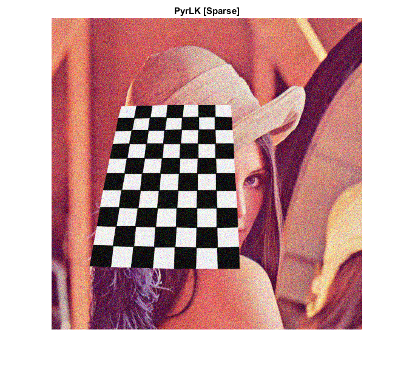
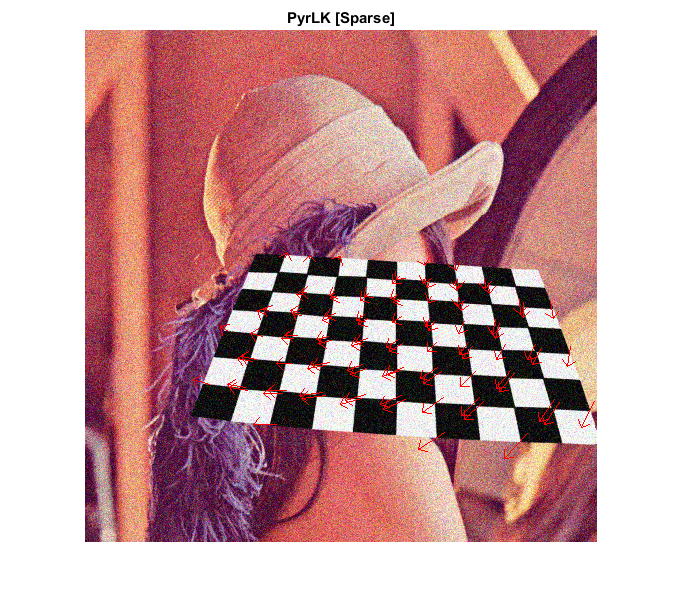

Contents
Lucas-Kanade Sparse Optical Flow
Sources:
function pyrlk_optical_flow_demo() % Prepare video source if true vid = 0; elseif true vid = fullfile(mexopencv.root(), 'test', '768x576.avi'); elseif mexopencv.require('vision') vid = fullfile(toolboxdir('vision'), 'visiondata', 'visiontraffic.avi'); end cap = createVideoCapture([], 'chess'); assert(cap.isOpened(), 'Failed to initialize capturing'); % Grab first frame frame = cap.read(); assert(~isempty(frame), 'Failed to read frame'); gray0 = cv.cvtColor(frame, 'RGB2GRAY'); % Plot hImg = imshow(frame); title('PyrLK [Sparse]') % Main loop while ishghandle(hImg) % Grab next frame frame = cap.read(); if isempty(frame), break; end gray1 = cv.cvtColor(frame, 'RGB2GRAY'); % Detect corners in previous frame pts0 = cv.goodFeaturesToTrack(gray0, ... 'MaxCorners',100, 'QualityLevel',0.01, 'MinDistance',0); pts0 = cat(1, pts0{:}); if isempty(pts0), continue; end % Compute sparse optical flow (track points from previous to current frame) [pts1, status] = cv.calcOpticalFlowPyrLK(gray0, gray1, pts0); pts1 = cat(1, pts1{:}); status = logical(status); % Draw sparse flow (only good points for which flow was found) if any(status) frame = drawArrows(frame, pts0(status,:), pts1(status,:)); end % Display result set(hImg, 'CData',frame); drawnow; % Next iteration gray0 = gray1; pts0 = pts1; end cap.release(); end
Helper function
function img = drawArrows(img, pts0, pts1) %DRAWARROWS Draw sparse optical flow % % See also: quiver % % compute angle and hypotenuse uv = pts0 - pts1; ang = atan2(uv(:,2), uv(:,1)); mag = hypot(uv(:,2), uv(:,1)); % skip short ones idx = (mag < 1.0); if all(idx), return; end pts0(idx,:) = []; pts1(idx,:) = []; ang(idx,:) = []; mag(idx,:) = []; % Options for line drawing props = {'Color',[255 0 0], 'Thickness',1}; % Here we lengthen the arrow by a factor of three, % and draw the main line of the arrow pts1 = pts0 - 3 * bsxfun(@times, mag, [cos(ang) sin(ang)]); img = cv.line(img, pts0, pts1, props{:}); % Now we draw the tips of the arrow. We do some scaling so that the % tips look proportional to the main line of the arrow pts0 = pts1 + 9 * [cos(ang + pi/4) sin(ang + pi/4)]; img = cv.line(img, pts0, pts1, props{:}); pts0 = pts1 + 9 * [cos(ang - pi/4) sin(ang - pi/4)]; img = cv.line(img, pts0, pts1, props{:}); end